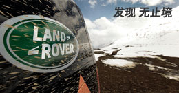

公里目前车队行走的里程
登录 注册
自1947年问世以来，世界豪华SUV的至臻之选，从来就只有路虎。
在六十五年的传奇旅程中，我们无所谓时代、环境如何变迁，始终坚持以举世无双的全地形反馈适应系统、独具标识性的外形设计和至为精湛的造车工艺...
了解更多

秉承60余年对发现精神的专注和探索，路虎一直鼓舞人们发现传奇、勇于探索。纵横四段探索旅程，从容应对复杂路况，驰骋间释放激情，引领路虎瞩目荣耀，尽显高端越野非凡品质，发现无止境！